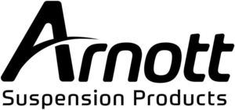

Trade Mark Journal No.2025/027 4 July 2025
WO0000001861350 (12)
Office of origin: United States of America
Date of International Registration:24 April 2025
Date of designation in the UK:
24 April 2025

The mark consists of the word "ARNOTT" in stylized letters, with the letter "A" being larger and with a curved line crossing left to right, the wording "SUSPENSION PRODUCTS" appear in smaller letters underneath "ARNOTT".
Registration of this mark shall not give right to the exclusive use of the words "SUSPENSION PRODUCTS".
- Class 12
- Kits for rebuilding and repairing automobiles comprised of automobile suspension parts, namely, suspension shock absorbers for vehicles, air compressors for land vehicles comprised of air dryers, vibration isolators, metric O-ring seal kits, comprised of non-metal O-rings of various sizes for use as connection seals, air suspension solenoids; air springs for vehicle suspension; air suspension struts comprised of vibration isolators, polyurethane bump stops being parts of suspension systems for land vehicles, and air suspension valves for controlling suspension height for vehicles; structural parts of automobile suspensions, namely, coil springs comprised of metal seatings and rubber isolators and structural components for replacement automobile suspension struts, namely, air shock absorbers and electronic suspension struts.
Arnott T&P Holding, LLC
Representative: Hilary F. Steinberger STEINBERGER IP LAW, 101 Brevard Avenue, Cocoa FL 32922, UNITED STATES OF AMERICA